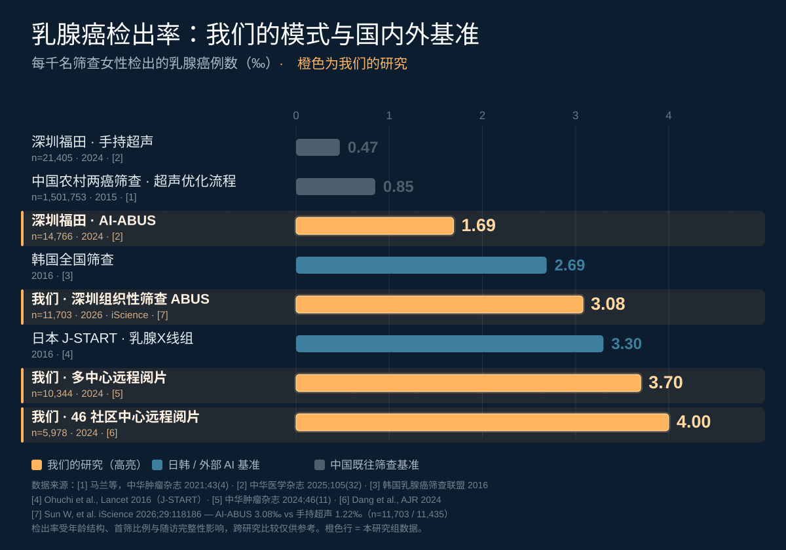
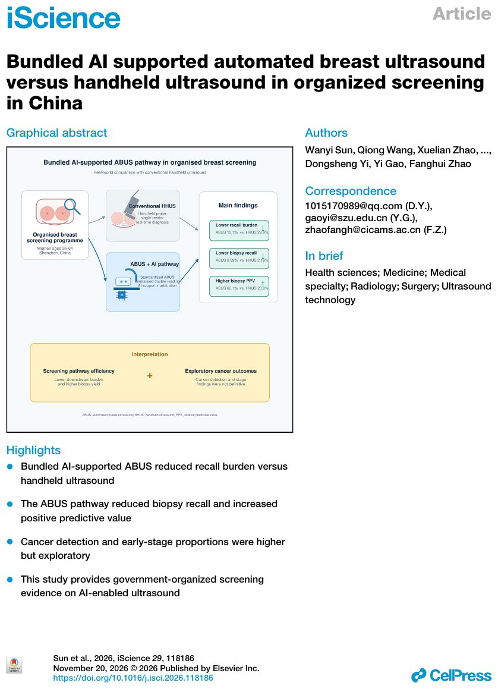
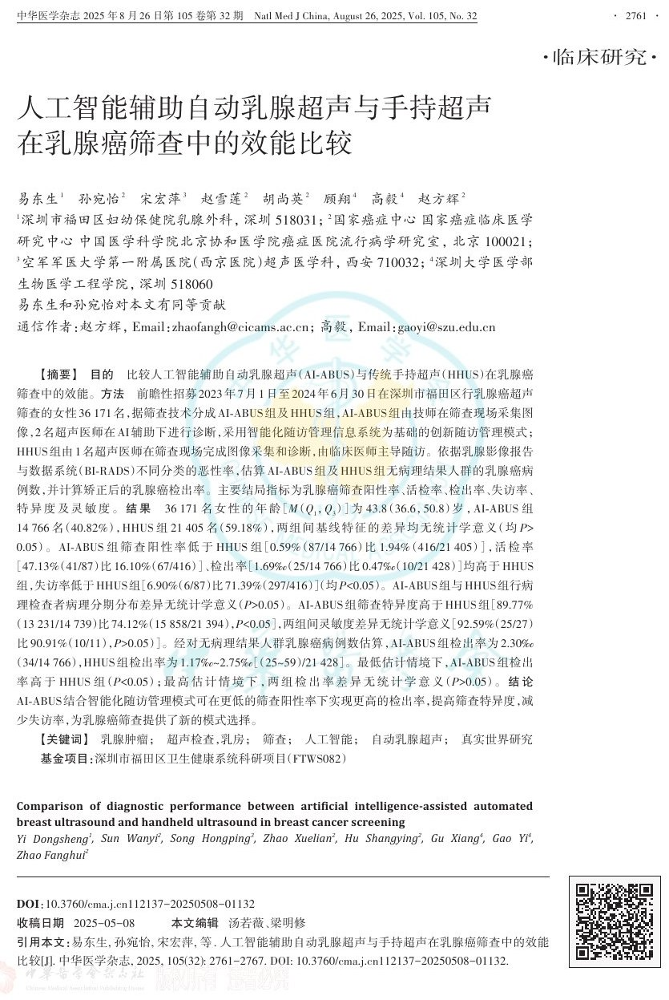
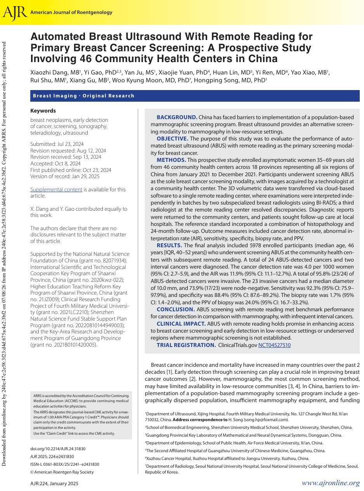
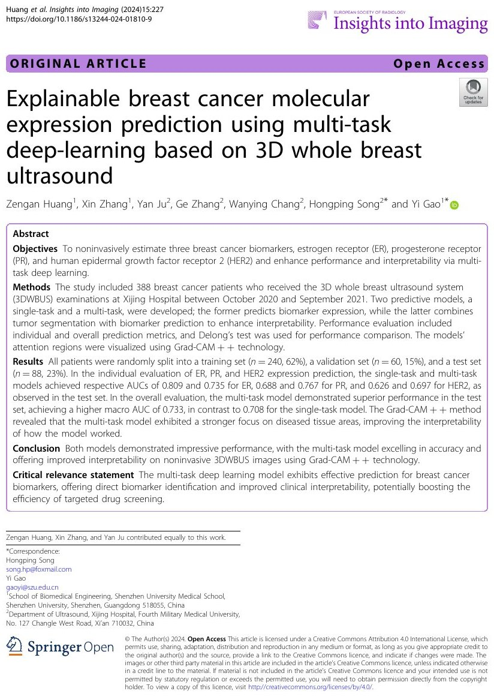

按应用领域 · 01
乳腺癌
从大规模筛查到分子预测：AI 辅助自动乳腺超声（ABUS）部署 70+ 机构、筛查 9 万余人；远程阅片筛查模式、MRI 定量；三维乳腺超声影像管理软件获国内首个该类别二类医疗器械注册证。
综述
从大规模筛查到分子预测：AI 辅助自动乳腺超声（ABUS）部署 70+ 机构、筛查 9 万余人；远程阅片筛查模式、MRI 定量；三维乳腺超声影像管理软件获国内首个该类别二类医疗器械注册证。
- 捆绑式 AI ABUS 与手持超声组织性筛查比较（iScience 2026）
- AI 辅助筛查将检出率从 0.5‰ 提高到 3.13‰
- 覆盖 46 个社区卫生中心的远程阅片前瞻性研究
- 获国内首个该类别二类医疗器械注册证

10 · 代表工作
代表工作
每张卡片：上方配图，下方要点。
01

Bundled AI Supported Automated Breast Ultrasound versus Handheld Ultrasound in Organized Screening in China
iScience · 2026
- 捆绑式 AI 支持的 ABUS 与手持超声在组织性人群筛查中的头对头比较。
- 来自中国组织性筛查项目的真实世界证据。
02

人工智能辅助自动乳腺超声与手持超声在乳腺癌筛查中的效能比较（Comparison of AI-assisted automated breast ultrasound and handheld ultrasound in breast cancer screening）
Chinese Medical Journal（中华医学杂志） · 2025
- 人工智能辅助 ABUS 与手持超声在人群乳腺癌筛查中的头对头比较。
- 发表于《中华医学杂志》，为基于 ABUS 的筛查模式提供循证依据。
03

Automated Breast Ultrasound With Remote Reading for Primary Breast Cancer Screening: A Prospective Study Involving 46 Community Health Centers in China
American Journal of Roentgenology · 2024
- 覆盖 46 个社区卫生中心的远程阅片 ABUS 筛查前瞻性研究。
- 建立了面向社区场景的可推广初筛模式。
04

Optimal lossy compression scheme of 3D volumetric ultrasound images for remote breast cancer screening
Journal of Imaging Informatics in Medicine · 2026
- 面向远程筛查场景确定三维容积超声的最优有损压缩方案。
- 显著降低存储与传输成本，支撑可落地的远程筛查。
05

Explainable breast cancer molecular expression prediction using multi-task deep-learning based on 3D whole breast ultrasound
Insights into Imaging · 2024
- 可解释的多任务深度学习基于三维全乳超声预测分子表达。
- 为治疗规划提供无创的分子表型提示。
06

Assessment of Neoadjuvant Treatment Response Using Automated Breast Ultrasound in Breast Cancer
Journal of Breast Cancer · 2022
- 基于 ABUS 的新辅助治疗疗效评估。
- 肿瘤响应的纵向容积成像。

09

Reproducible automated breast density measure with no ionizing radiation using fat-water decomposition MRI
Journal of Magnetic Resonance Imaging · 2018
- 基于脂肪-水分解 MRI 的全自动、无电离辐射乳腺密度测量。
- 面向纵向筛查强调可重复性。
10

Preoperative prediction of sentinel lymph node metastasis in breast cancer by radiomic signatures from dynamic contrast-enhanced MRI
Journal of Magnetic Resonance Imaging · 2019
- 基于 DCE-MRI 影像组学特征术前预测前哨淋巴结转移。
- 获评 J-MRI 2019–2020 年度最高被引原创研究论文。